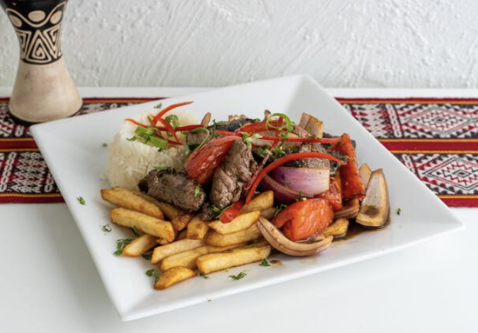

Lomo Saltado

Lomo Saltado, a classic Peruvian dish.
Originated as part of the chifa tradition, which stems from the Chinese
cuisine of Peru. Lomo Saltado is a popular dish that combines
marinated strips of tenderloin steak, with onions, tomatoes, french fires
and other ingredients. Typically served with rice. The word
saltado refers to stir fry, a widely recognized Chinese cooking
technique. Saltado dishes are comonly known in Peru to have a
Chinese cuisine influence.
Approximate preparation time = 30 minutes
Approximate cooking time = 40 minutes
Ingredients
- 2 tbsp of vegetable oil
- 1 lb tenderloin steak, cut into small strips
- 1 red onion, sliced
- 2 tomatoes, sliced
- 1 whole garlic minced
- 1 tbsp aji amarillo paste
- 2 tbsp soy sauce
- 1/2 cup fresh cilantro, chopped
-
1 lb french fries (best if you make your own but can use store bought as well to safe
time)
- rice of your choice
Steps
-
Add oil to large pan over high heat. Add the tenderloin strips and
season with salt and pepper. Cooked until browned, then remove from pan.
-
Add more oil to the same pan, then add the sliced red onion and sauté
until it is glazed and browned.
-
Add the tomatoes, garlic and aji amarillo paste and cook for another 5-6
minutes. You will know it is ready once the tomatoes have released their
juice but are still somewhat intact.
-
Add the soy sauce to the mixture in the pan and stir to combine, cook
for 1 minute.
-
Add the steak, fries and cilantro, stir to coat the fries in the sauce
- Plate with the rice of choice and enjoy!!
Return to Main Page